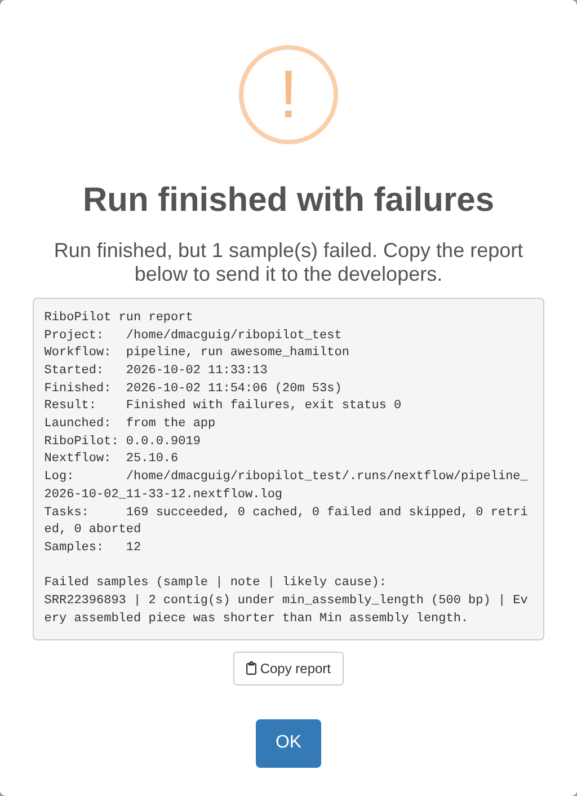

When a run fails: read the report
When a run ends with a failure, the app shows a report instead of the usual “Run finished with no failures.” The title says how the run ended: “Run finished with failures” (the run finished, but some samples or steps failed), “Run failed” (the run itself stopped with an error), or “Run stopped”.

RiboPilot also saves every report in the project’s
.runs/reports folder. Press Run Reports in
the toolbar to see past runs, reference builds, and jobs submitted to a
cluster, newest first. Here is a report from the test project, run on
the full read sets (full_size = TRUE), where a second
sample also fails:
RiboPilot run report
Project: ~/ribopilot_test
Workflow: pipeline, run peaceful_pare
Started: 2026-10-01 12:04:15
Finished: 2026-10-01 12:31:59 (27m 44s)
Result: Finished with failures, exit status 0
Launched: from the app
RiboPilot: 0.1.0
Nextflow: 25.10.6
Log: ~/ribopilot_test/.runs/nextflow/pipeline_2026-10-01_12-04-14.nextflow.log
Tasks: 178 succeeded, 0 cached, 0 failed and skipped, 0 retried, 0 aborted
Samples: 12
Failed samples (sample | note | likely cause):
SRR14433899 | 11 or more paths exceed max_paths (10) | GetOrganelle found more alternative paths than Max paths allows.
SRR22396893 | 2 contig(s) under min_assembly_length (500 bp) | Every assembled contig was shorter than Min assembly length.What each section means:
- Workflow through Log: which workflow ran (the pipeline, a recheck, or a reference build), when, how it ended and with what exit status, whether it was started from the app or as a job, and where its full log is.
- Tasks: how many pipeline steps ran, were reused from an earlier run, failed, were retried, or were stopped.
- Failed tasks, when a step stopped with an error: one line per failed step, with the sample ID, the step (the pipeline step’s name; see the table below), the error code (the raw number the step exited with, for example 140), the likely cause, the last line of the step’s error output, and its working folder.
- Failed samples: samples that finished without a usable assembly, with the pipeline’s note and the likely cause. After a recheck (Update on Annotation Review), Failed contigs lists instead each contig whose recheck failed or did not finish, with its note.
Samples that failed do not stop the others. Most steps skip a failed sample and carry on, so a run can finish with some samples done and a few failed.
The step names you may see, and what each step does:
| Step | What it does |
|---|---|
query_samples |
Reads the list of samples to run from the project. |
preprocess |
Cleans and trims the reads. |
below_min_depth |
Marks samples with too few reads to assemble. |
find_rrna_scan, find_rrna_pick,
stage_assembly
|
Search an assembly you supplied for rDNA contigs. |
assemble |
Assembles the rDNA with GetOrganelle. |
fallback_assemble |
Assembles with SPAdes (baited or de-novo). |
score |
Scores the contigs and picks a path. |
blast_genbank |
Runs the BLAST screen: searches each contig in the bundled rDNA database, and at NCBI when that finds nothing. |
blast_ref_fetch, blast_ref_align
|
Download reference sequences and align to them. |
coverage |
Maps the reads back for depth. |
annotate_tools, reconcile
|
Find the five features. |
curate, screen, chimera
|
Run the quality checks, the Screen verdict, and the chimera check. |
triage |
Proposes which contigs to keep. |
query_recheck, recheck_tools,
recheck
|
The recheck that Update on Annotation Review runs: pick the queued contigs, run barrnap and ITSx on each, then rerun its checks. |
Error codes
These are the codes the report explains, with what they usually mean:
| Code | What it usually means | What to do |
|---|---|---|
| 104, 247 | The step likely ran out of memory. | Raise Memory (GB) in that step’s options for the sample, for example in Assembly Options. |
| 125 | The container could not start: the image is missing, or a folder could not be mounted. | Check that Docker or Singularity works, and that the project’s image can be downloaded. |
| 126 | A command could not be run (permission denied). | Check the permissions of the project folder and the reads. |
| 127 | A command was not found: a tool is missing from the container or the PATH. | Usually the conda executor. Use Docker or Singularity. |
| 130 | The step was interrupted. | Press Update with Resume previous run? ticked. |
| 134 | The tool aborted, often because it ran out of memory. | Raise Memory (GB). |
| 137 | The step was killed: it ran out of memory, or the system stopped it. | Raise Memory (GB). On a cluster, it can also be a
time limit: raise walltime in your profile. |
| 139 | The tool crashed (segmentation fault), often because it ran out of memory. | Raise Memory (GB). |
| 140 | The scheduler killed the job, usually because it went over its time or memory limit (SGE and LSF clusters). | More memory does not fix a time limit: raise walltime
in your profile, or memory. |
| 143 | The step was stopped from outside, by the scheduler or by the system, often over its time or memory limit. | As for 140. |
- |
No exit code: the step was stopped before it finished. | Run again with Resume previous run? ticked. |
| any other | The tool stopped with an error. | Read the last error in the report, and the step’s log (see below). |
The memory-hungry steps (preprocess,
assemble, fallback_assemble,
find_rrna_scan, annotate_tools, and
recheck_tools) retry by themselves after codes 104, 134,
137, 139, 140, 143, and 247, up to three times, with more memory each
time. The report says how often a step was tried.
When a sample fails for another reason
Some failures are not an error code: too few reads, only short contigs assembled, or no rRNA genes found. The Notes column says why, and the sample’s details window shows a red box with the reason and what to try next. To rescue a sample whose assembly failed, see the rescue section of the assemble walkthrough and choosing an assembly method.
Where to look
- The run report, and the Notes column of the Assemble table.
- The sample’s details window (click its ID).
-
Work Dirs, in the Assemble step: the pipeline’s
working folder for each step of the ticked sample, with the step’s
.command.logand.command.err. - Run Reports, in the toolbar: every run’s report.
- The Nextflow log of each run, in the project’s
.runs/nextflowfolder.
Run a sample again
Select it, press State, choose Ready to run, then press Update with Resume previous run? ticked. Work that already finished is reused.
Stopping and resuming a run
Keep the browser tab open while a run is going. Closing the tab, reloading the page, closing the run window, or pressing Stop stops the run. RiboPilot stops it cleanly and keeps the work that finished. To carry on, press Update again with Resume previous run? ticked. Keep the computer awake too: a sleeping computer stops the run.
When you press Stop, the app says “Stopping the run: Nextflow is stopping its tasks. This can take up to a minute.” When it is done, a “Run stopped” report appears. If Nextflow does not stop within a minute, RiboPilot stops it by force, and the report says that some task containers may still be running: check them before you start a new run.
You can only spin up one run at a time for a project, and a stopped run still counts until its tasks have finished cleaning up. Pressing Update before then gives a message that a run is already going (see below).
Common messages
| Message | What it means | What to do |
|---|---|---|
| “database disk image is malformed” | The project database (.sqlite) is damaged. |
Close the app and recover the database with the commands below this table, then open the app again. |
| “No samples to show. A sample is listed once its taxonomy is locked in the Taxonomy step. …” | The Assemble table lists only samples whose taxonomy is locked, and the Lock and State filters and the search box can hide the rest. | Lock the samples in the Taxonomy step, or reset the filters and clear the search box. |
| “Nothing to update”: “No samples or contigs are Ready to run. …” | Nothing is queued. Locked or finished samples are skipped. | Set the State of the rows you want to Ready to run, then press Update. |
| “N reference group(s) are not built or skipped (…).” | Some reference groups have no database yet. The run goes ahead, and those samples use the database their options already name. | Build the databases in the Reference step first. |
| “Cannot run: N reference database file(s) named by the samples queued for assembly are missing or empty (…).” | A database the samples point at is gone. | Rebuild it in the Reference step, or point those samples at a database that exists. |
| “A pipeline run is already going for this project, or is still stopping its tasks (started …).” | Another window, or a stopped run that is still cleaning up, holds the project. | Wait for it to finish, or stop it in the window that started it. |
| “The mapping file is missing column(s): …” | The mapping file needs ID, Taxon, R1, and R2 (or Assembly). | See Your own project. |
| “IDs may use only letters, digits, dash (-), underscore (_), and colon (:) …” or “IDs must be 40 characters or fewer.” | An ID breaks the ID rules. | Rename it in the mapping file. |
| “Read files named in the mapping file were not found in …” | A name in R1 or R2 does not match a file in
data_path. |
Check the spelling, and that names are relative to
data_path. |
| “These paths have characters the pipeline cannot pass to Docker, Singularity, or Nextflow: …” | A path has a space, a quote mark, or another special character. | Rename it to use only letters, digits, and .,
_, -, and /. |
| “Group name … cannot be used: it becomes a folder name …” | An export group name has a space or another special character. | Use the name the message suggests. |
contaminant_unchecked, or the triage flag “BLAST screen
has not run” |
The BLAST screen has no usable hit for the contig: nothing matched in the bundled rDNA database, and the search at NCBI matched nothing, failed, or was switched off; or the bundled database returned a hit whose lineage could not be resolved, so the contig was never sent on to NCBI. It also appears when the sample has no taxon. | If NCBI could not be reached, set the sample to Ready to run and press Update once it can: the contig is searched again. For a bundled-database hit with no usable lineage, choose “NCBI only (core_nt)” under Search in the sample’s BLAST Options, then set it Ready to run and press Update. If the sample has no taxon, set one in the Taxonomy step. |
| “Nextflow … is below the minimum supported version (24.10.0).” | Your Nextflow is too old. | Install Nextflow 24.10 through 25.10; see Installation. |
| “Nextflow … is newer than RiboPilot has verified … Runs will be pinned to Nextflow 25.10.6 via NXF_VER.” | RiboPilot runs a supported version instead, downloading it once. | Nothing, or install a supported version. |
| “Container image … is not published on Docker Hub, so container executors will fail at image pull.” | The project names an image Docker cannot download. | Check the container you passed to
new_project(), and your network. |
| “Container version does not match RiboPilot” (when the app opens) | The project’s .config names the RiboPilot image for
another version, so runs use that image’s code and tools. |
Run RiboPilot::backwards_compatibility() on the project
(see Upgrading). The
app works either way. |
To recover a damaged project database, run these in the project folder:
Asking for help
Open an issue at https://github.com/NMNH-OceanDNA/RiboPilot/issues. Paste
the copied run report, and add your RiboPilot version
(packageVersion("RiboPilot") in R), your Nextflow version
(nextflow -v), and whether you use Docker, Singularity, or
a cluster profile. Check that nothing you paste contains your NCBI API
key.